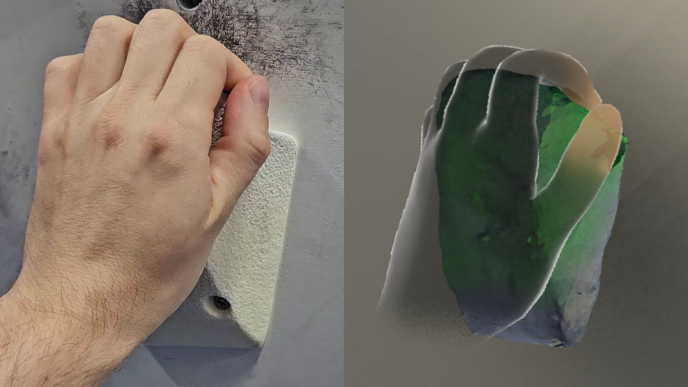
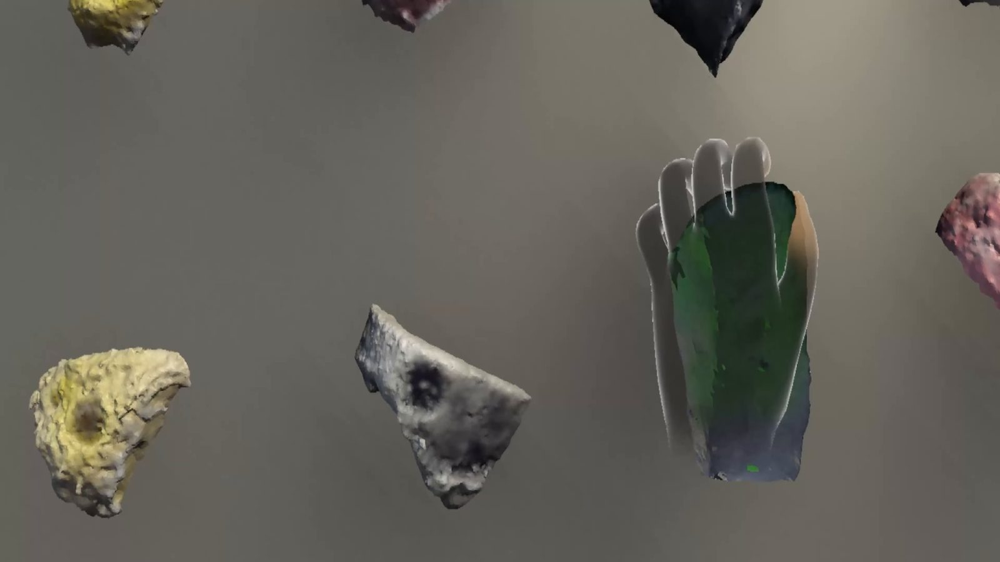

VHard: An XR UI for Kinesthetic Rehearsal of Rock Climbing Moves
IEEE International Symposium on Mixed and Augmented Reality Adjunct (ISMAR-Adjunct), 2024. Demo.

Abstract
Rock climbers frequently struggle to complete climbs due to the difficulty of practicing precise movements without actually attempting them. A standard strategy is to kinesthetically rehearse the hand and body positions required while on the ground. However, the lack of live feedback severely hampers this method because climbers can only roughly estimate the distances and positions involved. We introduce VHard, an extended reality (XR) application that visualizes the precision and accuracy of hand placements on a metric digital twin of a MoonBoard climbing wall. VHard augments kinesthetic rehearsal with XR feedback in order to assist climbers in completing difficult boulder problems.
Video

Cite
J. Salzman, J. Li, B. Yang, and S. Feiner, “VHard: An XR UI for Kinesthetic Rehearsal of Rock Climbing Moves,” in Proc. IEEE International Symposium on Mixed and Augmented Reality Adjunct (ISMAR-Adjunct), 2024, pp. 638–639, doi: 10.1109/ISMAR-Adjunct64951.2024.00188.
@inproceedings{salzman2024vhard,
title={VHard: An XR UI for Kinesthetic Rehearsal of Rock Climbing Moves},
author={Salzman, Joel and Li, Jace and Yang, Ben and Feiner, Steven},
booktitle={2024 IEEE International Symposium on Mixed and Augmented Reality Adjunct (ISMAR-Adjunct)},
pages={638--639},
year={2024},
doi={10.1109/ISMAR-Adjunct64951.2024.00188}
}